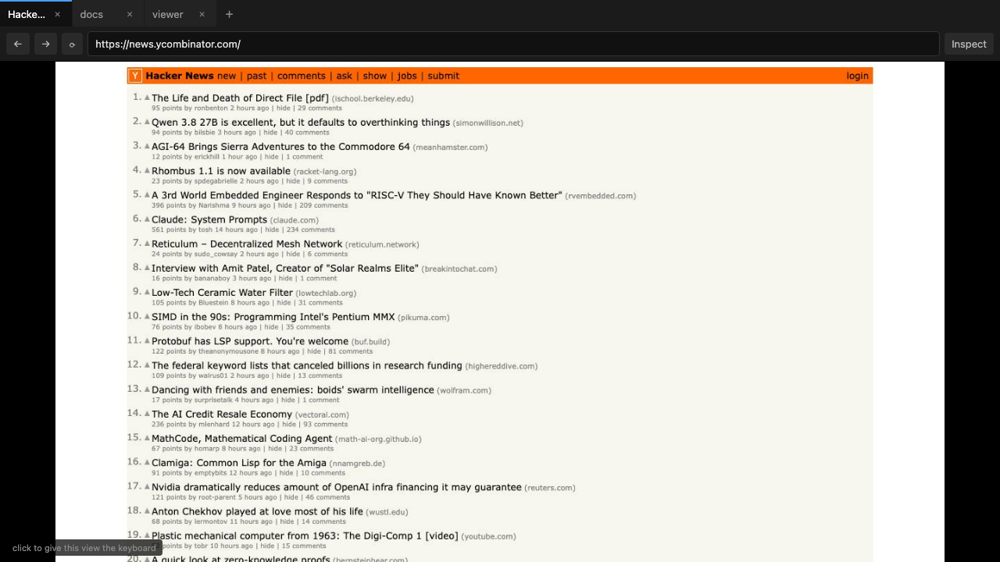
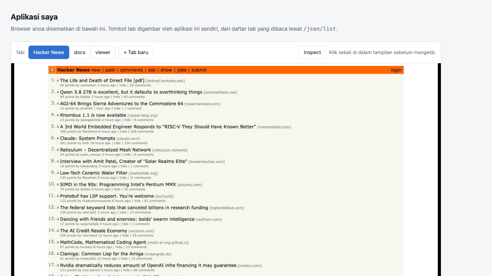
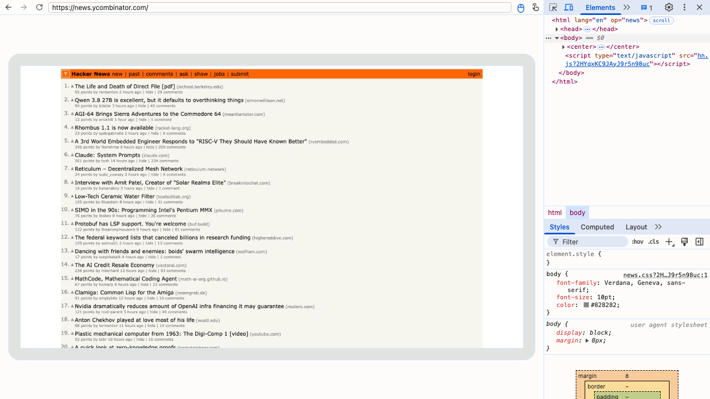

anoa is a real Chromium, driven from a shell, an HTTP endpoint, or any CDP client. One binary, no driver to install, no headless-versus-real distinction to reason about.
One command per action
Every command attaches to a browser that is already running and leaves it
running, so the page, the cookies and the scroll position survive between them.
snapshot hands back refs that the next command targets — which is
the part that makes this usable by an agent rather than by a person watching a
screen.
$ anoa --headless --port 9222 & $ anoa open example.com $ anoa snapshot -i @e1 link Documentation @e3 textbox Search [required] @e7 button Sign in $ anoa fill @e3 "anoa browser" $ anoa click @e7 $ anoa wait --selector ".results" $ anoa get text
A button underneath a consent banner is reported, not clicked through. You find out that the click did not land, instead of finding out later.
anoa tab new example.com --name research. Every command takes
--tab, so parallel work stays in its own tab, addressed by a name
you chose.
Logins survive between runs by default. Named profiles get their own cookie
jar and storage; --ephemeral keeps nothing.
anoa skills get core prints the workflow as text meant to be
pasted into a context window, not into a browser.
Live view · new in v0.11.0
/render is a page. Open it in any browser and you get the live
stream of a tab you can click, drag, type and scroll in, with a
tab bar, a URL bar and an Inspect button. No client to install, nothing to build.

/render, streaming one tab while the
others stay live in the background.It is built to sit in an <iframe>. ?tab= picks
which tab that frame drives, so two frames drive two tabs at once — an agent's
tab and a person's, side by side. ?embed=1 drops the built-in chrome
so your app draws its own.
<!-- your app -->
<iframe src="http://localhost:9222/render?embed=1&tab=t2"
width="1280" height="720" style="border:0"></iframe>

/json/list. Mouse and keyboard are handled inside the frame — the
host forwards nothing.Framing is opt-in by origin. The view forwards keystrokes as well as showing pixels, so a page that can frame it can act inside a logged-in session. The default is same-origin only; naming an origin is one flag:
$ anoa --headless --port 9222 --embed-origin https://app.example.com
Inspect
The Inspect button opens Chromium's own DevTools against the tab you are watching — Elements, Styles, Network, the console. Nothing is reimplemented: the frontend is the one Chromium ships, talking over the CDP endpoint anoa already exposes.

anoa terminal
Over SSH, on a box with no display: anoa terminal renders the live
page as half-block ANSI, or as real images in iTerm2 and kitty, and forwards your
clicks, scrolls and typing back to it. Point it at a running browser, at any
external Chrome with --cdp, or at nothing at all and it hosts its own.
# watch and control a browser running anywhere $ anoa terminal --term-host 10.0.0.4 --term-port 9222 # or attach to any Chrome you already started $ anoa terminal --cdp http://127.0.0.1:9222 # or just this, and it brings its own browser $ anoa terminal
Compatible
Chrome-compatible discovery endpoints and a WebSocket proxy with session multiplexing. Playwright and Puppeteer connect to it unmodified. Optional bearer-token auth, and no Origin rejections, so it works behind tunnels and reverse proxies.
// Playwright const browser = await chromium.connectOverCDP('http://localhost:9222'); // Puppeteer const browser = await puppeteer.connect({ browserURL: 'http://localhost:9222' });
Ports come in a triplet. You point a client at 9222, which serves
discovery and /render/*; 9223 is Chromium's own debugging
port, kept internal; and the WebSocket the client is handed lands on
9224, the proxy that multiplexes sessions and checks the token.
Install
The terminal viewer is a subcommand of the same executable, not a second file. Pick your platform.
$ brew tap porcupine-md/tap $ brew trust porcupine-md/tap $ brew install --cask anoa
One universal build for Intel and Apple Silicon, Developer ID signed and notarized — it opens with no Gatekeeper warnings.
# x86_64 or aarch64 — one file, no unpacking, no root $ chmod +x anoa-x86_64.AppImage $ ./anoa-x86_64.AppImage --headless --port 9222 $ ./anoa-x86_64.AppImage open example.com
Built for x86_64 and aarch64 against the same Qt, so both run on
anything with glibc 2.35 or newer — Ubuntu 22.04, Debian 12 and later, which is
what an ARM board usually runs. It carries its own FUSE, so it does not need
libfuse2. Download the latest release →
$ curl -fsSL https://raw.githubusercontent.com/porcupine-md/anoa-browser/master/scripts/install-linux.sh | bash
Installs the portable bundle under ~/.local/lib/anoa
and puts the launcher on your PATH. Nothing system-wide, no root, and
re-running it upgrades in place.
$ docker run -d --name anoa -p 9222:9222 ghcr.io/porcupine-md/anoa-browser $ docker exec anoa anoa open example.com $ docker exec anoa anoa snapshot -i
Publish 9224 as well if a CDP client outside the
container needs to attach — that is where the WebSocket ends up.
# download anoa-windows-x86_64.zip, unzip, then > anoa.exe --headless --port 9222 > anoa.exe open example.com
Everything works except anoa terminal, which needs
termios and is POSIX-only. Download the latest release →